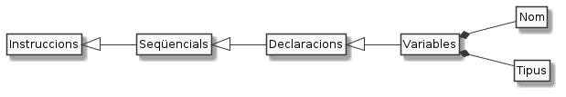

Variables i tipus¶

Tal i com vam veure a Declaracions i assignacions, en programació tenim el concepte de variable.
Una variable és un nom que ens inventem per referir-nos a alguna cosa.
El valor d’una variable¶
Hem dit que amb la variable ens estem referint a alguna cosa. Aquesta alguna cosa li direm valor o dada.
Alguns exemples de valor són:
la teva talla de sabates
la data del teu aniversari
el teu nom
el color de fons del teu escriptori
si t’agrada o no el gust de la llimona
la lletra de la teva cançó preferida
la llista de pel·lícules i llibres que més t’han marcat
Per exemple, en el cas del Renat,
la seva talla de sabates és la 4 (li agrada anar ample),
la data del seu naixement el 23 de juny de 2003 (sí, ha plogut)
el seu nom és, naturalment, Renat
és fals que li agradi el gust a llimona. De fet, l’odia
la lletra de la seva cançó preferida (només un trocet) és
Marrameu torra castanyesa la voreta del focJa n’hi peta una als morrosJa tenim Marrameu mort.Pica ben fortPica ben fortQue piques fustaPica ben fort.…Mai no ha llegit un llibre però li agraden totes les pel·lícules del seu heroi, en Garfield
El nom d’una variable¶
A les variables ja sabem que les hem de donar un nom que ens inventem. Aquest nom, però, no pot ser qualsevol cosa.
Per començar, el llenguatge de programació ens imposarà restriccions a les que haurem d’incloure temes de convenció i estil. Com que no ens volem passar ara una estona llegint-nos la lletra petita, et faré un breu resum de les regles bàsiques que hauràs de seguir en aquest curs:
el nom d’una variable ha de començar per lletra minúscula
Per exemple,
nombreodata.a continuació de la inicial, pots continuar amb lletres i números
Per exemple,
color1odies2i3.Si t’és possible, intenta evitar, però, fer servir nombres en els noms de les variables. Es veurà molt més clar.
Si el nom conté més d’una paraula, la inicial de cada paraula, excepte la primera, anirà en majúscules
Per exemple,
primerColor,diesFestius,dataNeixementEn Java no està ben vist separar les paraules que formen el nom d’una variable amb guions baixos
_. Per exemple,primer_colorseria considerat un mal nom en Java. Tot i que el compilador te l’acceptaria, els teus futurs col·legues de professió no estaran gaire contents.El nom, ha d’explicar a què fa referència
Per exemple, encara que a una variable que fa referència a una data de naixement li podem dir
v1obaixantDeLaFontDelGatperò segurament estaràs d’acord amb mi que aquests noms no diuen gaire del valor a què farà referència la variable.Un nom adequat per una variable que fa referència a la data de naixement pot ser:
dataNaixementodatasi no hi ha confusió amb altres dates.Els noms poden ser tant llargs com et calguin, però, és preferible no afegir paraules que no aportin significat. Per exemple, la variable
laDataDeNaixementDelGatRenatpot prescindir de partícules i altres dades conegudes, quedant endataNaixementRenatFinalment, el nom d’una variable ha de ser únic en el seu context. És a dir, cada variable ha de tenir un nom diferent o sinó tornaríem boig al Java per saber a quin valor ens referim!
No pateixis, si intentes declarar dues variables amb el mateix nom, el Java t’ho farà saber.

El tipus d’una variable¶
Fixa’t que, tot i que tots aquests són exemples de valors o dades, no poden ser qualsevol cosa. Per exemple, que li agrada la llimona podria ser cert, però no, diguem blanc o 42.
Als valors que tenen sentit per una determinada variable li diem tipus de dades.
Els tipus de dades amb els que començarem a jugar en aquest curs, si no ho hem fet ja, són:
enters
Java els coneix com
intEs tracta de valors numèrics enters com el 42 i el -12
Per exemple:
int edat = 42; int temperaturaMinima = -12;
booleans
Java els coneix com a
booleanEls valors possibles per una variable booleana són només cert (
true) i fals (false)Uns exemples:
boolean mAgradaProgramar = true; boolean portoTresSabates = false;
caracters
En Java en diem
charEs tracta dels diferents símbols que poden aparèixer en un text. Són per exemple les lletres com
aiÇ, els signes de puntuació com el;o)i d’altres més peculiars com ara↑i€.En Java escriurem els valors de tipus caracter entre cometes simples.
Alguns exemples
char lletraInicial = 'R'; char hiraganaA = 'あ';
cadenes de text o de caracters
En Java parlem de
StringEls valors de tipus String són zero o més caracters que representem sempre entre cometes dobles.
Per exemple,
String nom = "Renat"; String cadenaBuida = "";
Fixa’t que el darrer exemple és també una cadena de text, encara que no conté cap lletra!
decimals
Quan ens calgui representar nombres amb decimals, farem servir el
doublede Java.Uns exemples:
double radi = 2.36; double unMig = 0.5;
Com veus, a diferència del que faríem en català, la coma decimal la representem amb un punt.
Curiosament, quan mostrem els valors per pantalla i quan els llegim, és possible que el punt sigui transformat en coma. Coses de la configuració del teu equip.